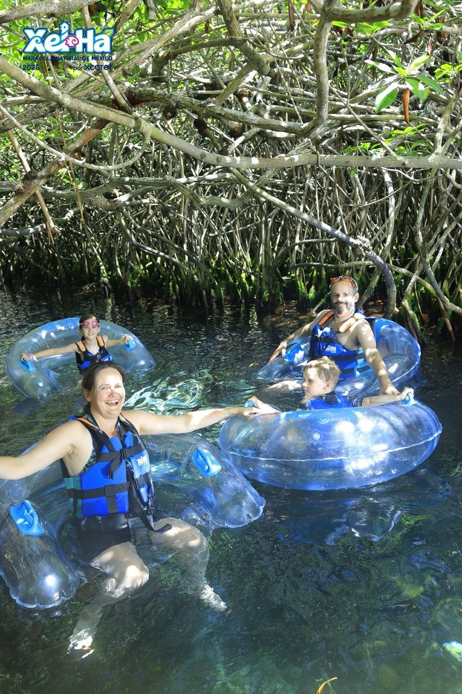
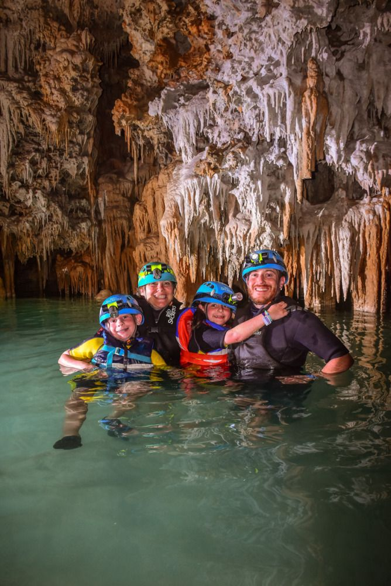
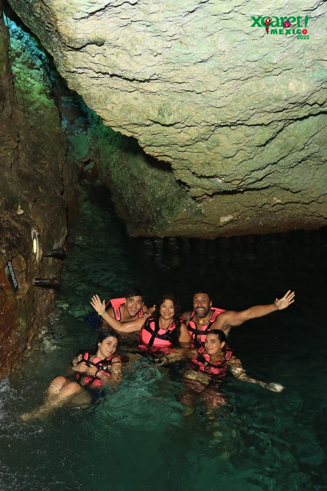
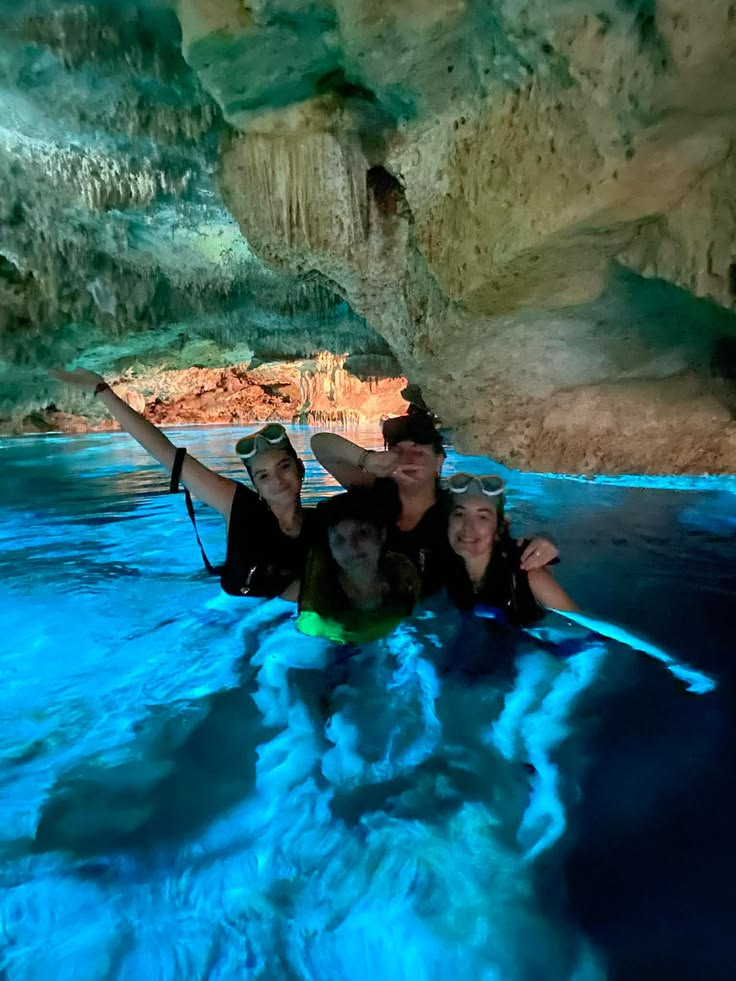
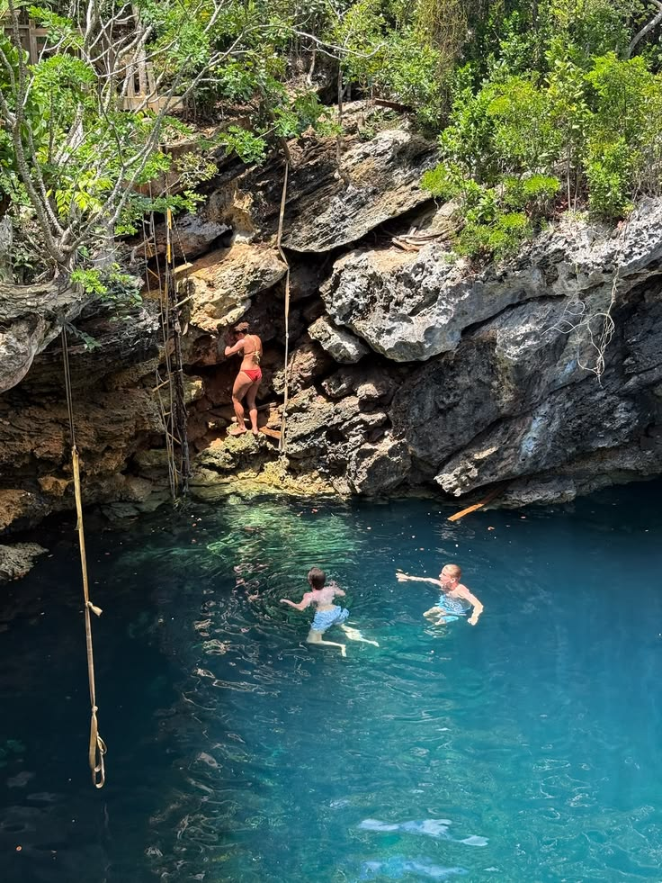
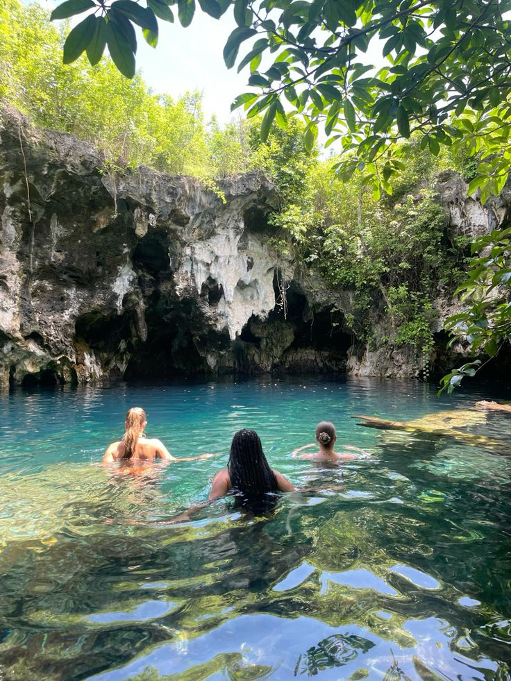

The Grotto Entrance
See the dramatic entrance to the cave where visitors begin their adventure into the clear Exuma waters.
Exuma Sport Coast Service helps visitors discover comfortable accommodation and memorable experiences throughout Exuma, Bahamas.
Explore beautiful islands, beaches, sandbars, marine life, swimming spots and unforgettable destinations across the Exuma Cays.
Explore One of Exuma's Most Famous Underwater Caves
Thunderball Grotto is one of the most recognizable natural attractions in the Exuma Cays. This spectacular limestone cave system sits near Staniel Cay and is famous for its crystal-clear water, dramatic rock formations and underwater passages.
Visitors can swim or snorkel into the grotto through openings in the rock and discover a fascinating underwater world. Sunlight enters through openings in the cave, creating beautiful reflections across the turquoise water and rocky walls.
The grotto became internationally famous after appearing in the James Bond film Thunderball. Today it remains one of the most popular snorkeling experiences in the Exuma Cays.

See the dramatic entrance to the cave where visitors begin their adventure into the clear Exuma waters.

The grotto is surrounded by remarkably clear turquoise water, making it ideal for swimming and snorkeling.

Snorkelers can encounter tropical fish moving through the shallow water around the cave's rocky environment.

Natural openings allow sunlight into the grotto, producing beautiful patterns of light across the water.

Explore the rugged limestone formations that make the grotto such a distinctive natural attraction.

A grotto visit combines swimming, snorkeling, sightseeing and an unforgettable island adventure.
Thunderball Grotto is particularly exciting for visitors who enjoy snorkeling. The clear water makes it possible to observe fish and underwater rock formations while swimming through the cave system.
The grotto is commonly visited as part of boat trips around Staniel Cay and the surrounding Exuma Cays. Many island-hopping excursions include the grotto as one of their major stops.
Visibility and access can vary with tides, weather and sea conditions. Visitors should follow their captain or guide's instructions when entering the cave.
The combination of blue water, sunlight, rock formations and marine life makes Thunderball Grotto an excellent location for underwater photography and holiday memories.
A visit to Thunderball Grotto can be combined with other famous Exuma attractions, including Staniel Cay, nearby sandbars, Compass Cay and the Exuma Cays Land & Sea Park.
Whether you are visiting for snorkeling, sightseeing, photography or simply experiencing one of the Bahamas' most memorable natural attractions, Thunderball Grotto offers an adventure worth adding to your Exuma itinerary.
Exuma Sport Coast Service · Exuma, Bahamas, opposite the airport · exumaaccomodations@gmail.com
© 2026 Exuma Sport Coast Service · All rights reserved.